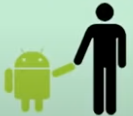

História do mascote Android
De acordo com o New York Times, ela trabalhou no Google durante o ano de 2007, ano que o Google tinha planos adiantados para estrear sua plataforma móvel e precisava de um símbolo para identificá-la junto aos consumidores. Inicialmente, acreditava-se que o logotipo da marca Android foi inspirado nos símbolos de masculino e feminino presentes na entrada de banheiros, segundo uma reportagem de 2013 do jornal New York Times. No entanto, a ilustradora desmente essa história, dizendo que a ideia "era criar algo com que todos pudessem se identificar e algo que os desenvolvedores particularmente gostassem". É aí que entra o fato da imagem ser open source: qualquer pessoa pode modificá-la e criar o próprio logotipo Android.
A primeira versão
A figura foi desenvolvida pela designer Irina Blok, que, mesmo não trabalhando mais para a gigante das buscas, se tornou responsável por um dos logotipos mais icônicos da indústria de tecnologia. Ao contrário do que muitas empresas pensam na hora de criar esses símbolos, a ideia de Blok era chamar a menor atenção possível para a imagem e atrair desenvolvedores com uma proposta open-source (parecida com o Android) antes de torná-la popular entre os demais usuários. A primeira tentativa ... desenvolvido por Dan Morril . Ele que abriu Inkscape
Essa primeira tentativa foi batizada com ... seriam os Dandroids Um detalhe curioso na criação do símbolo é que, na época em que foi elaborado por Blok, ninguém dentro do Google sabia como ele seria. A designer produziu o símbolo sozinha e o colocou à disposição dos desenvolvedores, mas não demorou muito para que funcionários da companhia baixassem os códigos e começassem a fazer as próprias versões do robô verde.
Surge um novo mascote
a ideia de ter um novo mascote ... A ilustradora Russa Irina Blok também funcionária ... Desde então, todas as versões do Android mantêm o icônico boneco em formato de robô, que varia de acordo com o modelo da plataforma. Por exemplo, na versão 4.0 KitKat, o mascote adotou o visual do famoso chocolate da Nestlé e nesta última, a 5.0 Lollipop, o símbolo ganhou um pirulito. A marca ainda ganhou diversos brinquedos, como pelúcias, action figures e miniaturas licenciadas do Bugdroid em vários tamanhos e cores.
A ideia principal da irina era ... Surgiu então o Bugdroid, o novo mascote do Android. Desde então, todas as versões do Android mantêm o icônico boneco em formato de robô, que varia de acordo com o modelo da plataforma. Por exemplo, na versão 4.0 KitKat, o mascote adotou o visual do famoso chocolate da Nestlé e nesta última, a 5.0 Lollipop, o símbolo ganhou um pirulito. A marca ainda ganhou diversos brinquedos, como pelúcias, action figures e miniaturas licenciadas do Bugdroid em vários tamanhos e cores.
A principal inspiração foi os traços do novo ... Bugdroid Desde então, todas as versões do Android mantêm o icônico boneco em formato de robô, que varia de acordo com o modelo da plataforma. Por exemplo, na versão 4.0 KitKat, o mascote adotou o visual do famoso chocolate da Nestlé e nesta última, a 5.0 Lollipop, o símbolo ganhou um pirulito. A marca ainda ganhou diversos brinquedos, como pelúcias, action figures e miniaturas licenciadas do Bugdroid em vários tamanhos e cores.
então é isso! ... foi apresentado aqui um resumo dos mascotes andoid. Desde então, todas as versões do Android mantêm o icônico boneco em formato de robô, que varia de acordo com o modelo da plataforma. Por exemplo, na versão 4.0 KitKat, o mascote adotou o visual do famoso chocolate da Nestlé e nesta última, a 5.0 Lollipop, o símbolo ganhou um pirulito. A marca ainda ganhou diversos brinquedos, como pelúcias, action figures e miniaturas licenciadas do Bugdroid em vários tamanhos e cores.